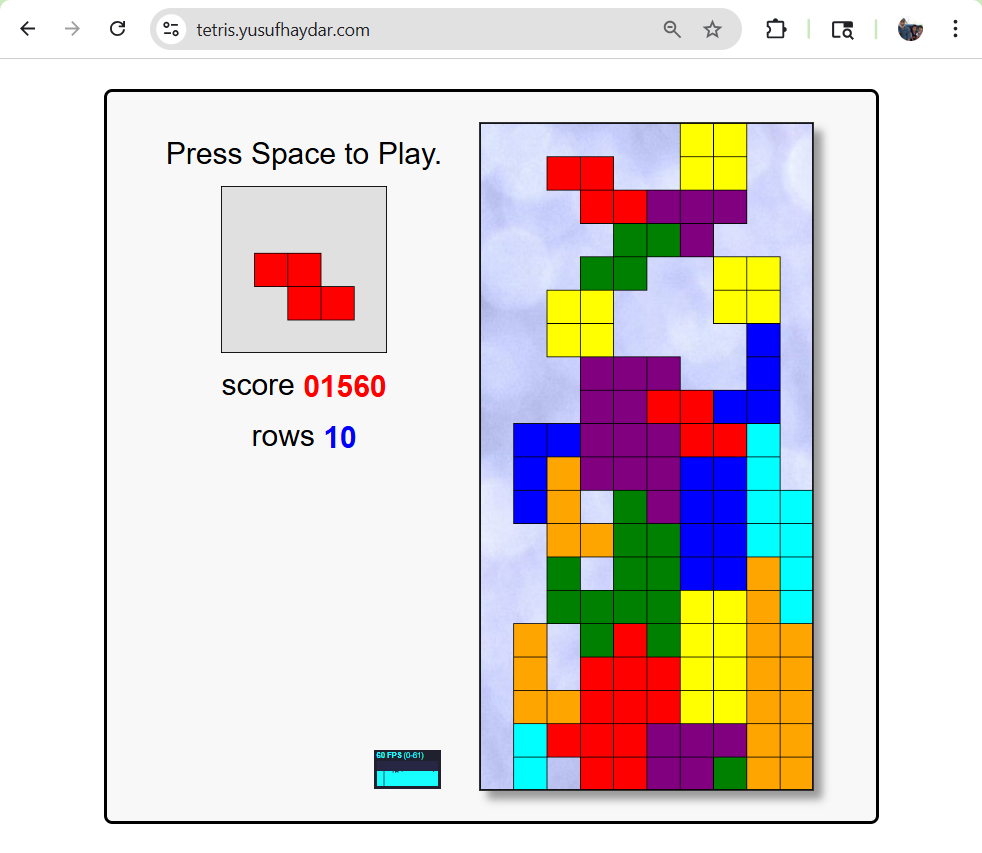
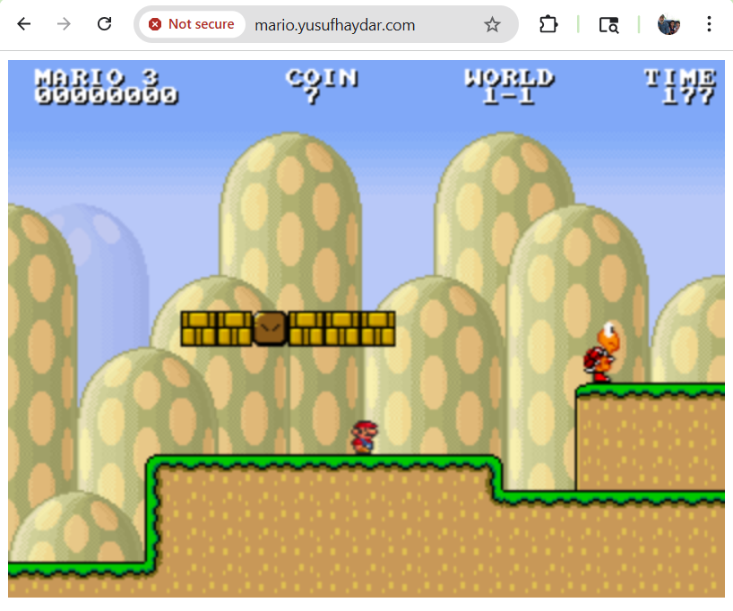

I was in the interview process for a DevOps role, that mentioned kubernetes on the job description. Although I was a big fan of container technology and container orchestration tooling, I had no experience actually setting up a cluster. This led me to first complete a Linkedin Learning course, Kubernetes: Microservices. Here I set up a local minikube cluster with Calico as the CNI(container network interface), deployed backend and frontend services, configured pod to pod network policies, and set up an nginx ingress controller. Although this was cool, I wanted to set up a cluster that felt really cool.
I first found Deploying Super Mario game on Kubernetes, and wanted to follow along, although I was going to use Azure Kubernetes Services instead of HPE because I had already started a free 30 day account. To this end, I found this article, Deploy AKS cluster using Terraform and hoped to use both to achieve my goal.
Using the Terraform article as a guide, I grabbed the tf files, making some small changes like changing vm_size = "Standard_D2_v2" to vm_size = "standard_dc2as_v5". This change only came from getting errors when running terraform apply later on. Standard_dc2as_v5 seemed to be the cheapest VM option available to me in my free plan.
az login on your local command line. Follow link to site to login.providers.tf, ssh.tf, main.tf, variables.tf, outputs.tf from the article.terraform init -upgradeterraform plan -out main.tfplanterraform apply main.tfplan. Give it a few minutes to set up the cluster (took 5m15s for me).resource_group_name=$(terraform output -raw resource_group_name)az aks list \ --resource-group $resource_group_name \ --query "[].{\"K8s cluster name\":name}" \ --output tableecho "$(terraform output kube_config)" > ./azurek8s<< EOT at the beginning and EOT at the end of the azurek8s file if you see them in there.export KUBECONFIG=./azurek8skubectl get nodes.kubectl apply -f games.yaml (Available on my Github)kubectl apply -f ingress.yamlkubectl apply -f https://raw.githubusercontent.com/kubernetes/ingress-nginx/controller-v1.14.1/deploy/static/provider/cloud/deploy.yaml (Azure Specific)kubectl apply -f https://github.com/cert-manager/cert-manager/releases/download/v1.19.2/cert-manager.yamlkubectl apply -f certificate.yamlkubectl apply -f cluster-issuer.yaml

Written with StackEdit.